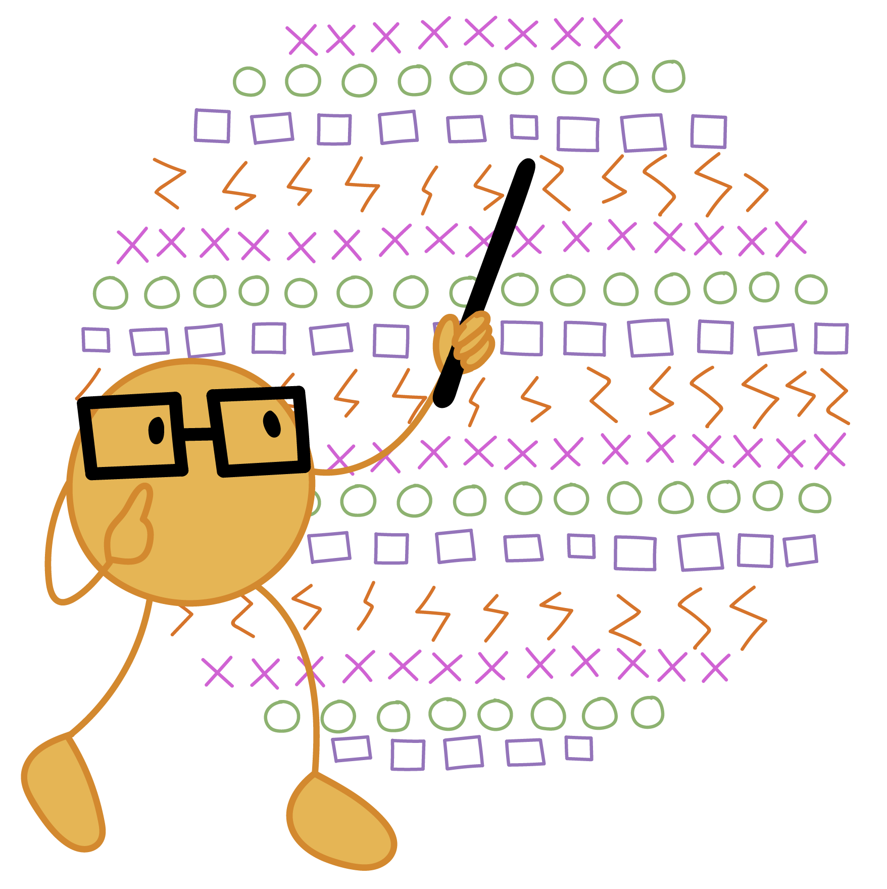

The major educational initiative of the JHUDSL is to create open-source online courses delivered through a range of platforms including Youtube, Github, Leanpub, and Coursera. We currently have four active MOOC programs that you can enroll in at any time. Join over 8 million other students in taking a course produced by the Johns Hopkins Data Science Lab!
This Specialization is intended for data scientists with some familiarity with the R programming language who are seeking to do data science using the tidyverse family of packages. Through 5 courses, you will cover importing, wrangling, visualizing, and modeling data using the powerful Tidyverse framework. The Tidyverse packages provide a simple but powerful approach to data science which scales from the most basic analyses to massive data deployments. This course covers the entire life cycle of a data science project and presents specific tidy tools for each stage. At completion, students will have a portfolio demonstrating their mastery of the material.
| Class | Course Page | Links | |
|---|---|---|---|
| Introduction to the Tidyverse | Coursera course | bookdown chapter | |
| Importing data in the Tidyverse | Coursera course | bookdown chapter | |
| Wrangling data in the Tidyverse | Coursera course | bookdown chapter | |
| Visualizing data in the Tidyverse | Coursera course | bookdown chapter | |
|  | Modeling Data in the Tidyverse | Coursera course | bookdown chapter |
This Specialization covers the concepts and tools you’ll need throughout the entire data science pipeline, from asking the right kinds of questions to making inferences and publishing results. In the final Capstone Project, you’ll apply the skills learned by building a data product using real-world data. At completion, students will have a portfolio demonstrating their mastery of the material.
| Class | Course Page | Links |
|---|---|---|
| Data Scientist’s Toolbox | Coursera | Lecture notes |
| R programming | Coursera | Lecture notes, Book |
| Getting and Cleaning Data | Coursera | Lecture notes |
| Exploratory Data Analysis | Coursera | Lecture notes, Book |
| Reproducible Research | Coursera | Lecture notes, Book |
| Statistical Inference | Coursera | Lecture notes, Book |
| Regression models | Coursera | Lecture notes, Book |
| Practical Machine Learning | Coursera | Lecture notes |
| Developing Data Products | Coursera | Lecture notes, Book |
This specialization covers the concepts and tools to understand, analyze, and interpret data from next generation sequencing experiments. It teaches the most common tools used in genomic data science including how to use the command line, Python, R, Bioconductor, and Galaxy. The sequence is a stand alone introduction to genomic data science or a perfect compliment to a primary degree or postdoc in biology, molecular biology, or genetics.
| Class | Course Page | Links |
|---|---|---|
| Introduction to Genomic Technologies | Coursera | |
| Genomic Data Science With Galaxy | Coursera | Videos |
| Python for Genomic Data Science | Coursera | |
| Algorithms for DNA Sequencing | Coursera | Videos, Slides, Notebooks |
| Command Line Tools for Genomic Data Science | Coursera | |
| Bioconductor for Genomic Data Science | Coursera | Book, Videos, Notes |
| Statistics for Genomic Data Science | Coursera | Notes, R package |
In four intensive courses, you will learn what you need to know to begin assembling and leading a data science enterprise, even if you have never worked in data science before. You’ll get a crash course in data science so that you’ll be conversant in the field and understand your role as a leader. You’ll also learn how to recruit, assemble, evaluate, and develop a team with complementary skill sets and roles. You’ll learn the structure of the data science pipeline, the goals of each stage, and how to keep your team on target throughout. Finally, you’ll learn some down-to-earth practical skills that will help you overcome the common challenges that frequently derail data science projects.
| Class | Course Page | Links |
|---|---|---|
| A Crash Course in Data Science | Coursera | Book |
| Building a Data Science Team | Coursera | Book |
| Managing Data Analysis | Coursera | Book |
| Data Science in Real Life | Coursera | Book |
This Specialization covers R software development for building data science tools. As the field of data science evolves, it has become clear that software development skills are essential for producing useful data science results and products. You will obtain rigorous training in the R language, including the skills for handling complex data, building R packages and developing custom data visualizations. You will learn modern software development practices to build tools that are highly reusable, modular, and suitable for use in a team-based environment or a community of developers.
| Class | Course Page | Links |
|---|---|---|
| The R Programming Environment | Coursera | Book |
| Advanced R programming | Coursera | Book |
| Building R packages | Coursera | Book |
| Building Data Visualization Tools | Coursera | Book |